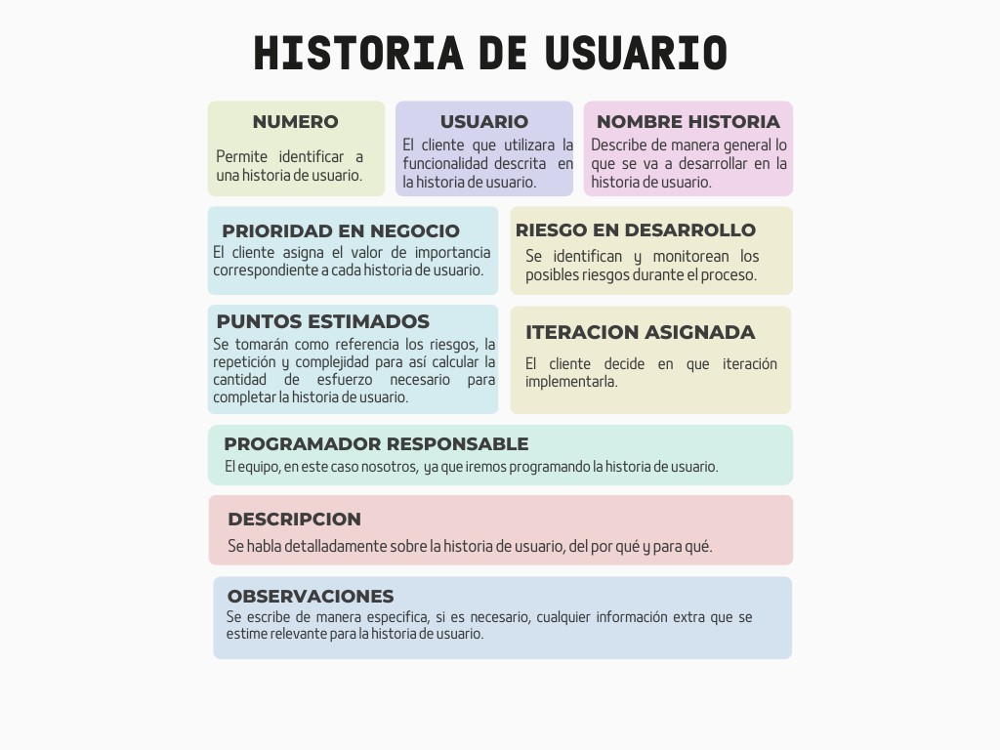
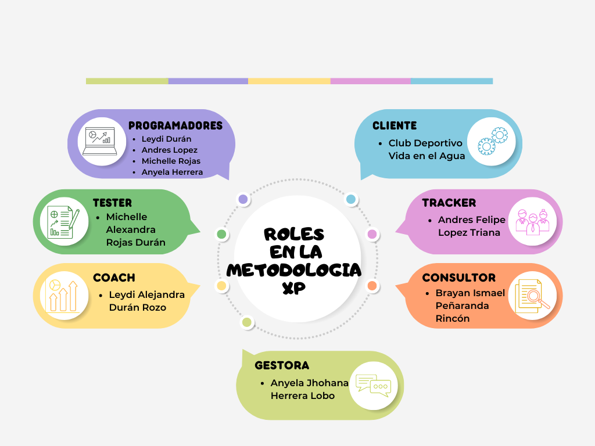

Actividad Entregable
-> Documento con la estructura según metodología XP (Fases- entregables o insumos que salen de cada fase)

FASE 1:
br

Plan de entrega con criterios de aceptación: Se reúne un conjunto de opiniones con el grupo para con ellos conocer los criterios de aceptación y formular un plan que cumpla con dichos criterios al momento de la entrega.
Plan de itinerarios: Junto con el equipo de trabajo se programaron las fechas a las que se les asignará cierto progreso del proyecto.
FASE 2
Diseño simple de código: El código será enfocado en los objetivos principales, por lo que su código será simple para facilitar y mejorar el rendimiento al momento de hacer el código.
Prototipo: Se creará un código que cuente con algunas funciones principales y este mismo será probado para encontrar errores que retrasen el desarrollo del proyecto.
Tarjeta CRC: Una vez desarrollado un prototipo en cual basarse, procedemos a realizar tarjetas CRC a sus clases, para con ello organizar el código.
FASE 3
Programación del código de propiedad colectiva: Los miembros del equipo trabajan en conjunto, de forma que se trabaja en parejas pero cada miembro del equipo puede aportar algo a partes del código que inicialmente no se les asignaron.
Rediseño: Solo de ser necesario, por ejemplo, si las pruebas unitarias fallaron, hubo un estancamiento de trabajo, el código se encuentra desordenado,etc. Se toma la decisión de rediseñar el código.
FASE 4
Pruebas de mini-versiones: Con la ayuda de pruebas unitarias y pruebas de regresión, el código será vigilado para su correcto funcionamiento en su forma general y en sus detalles.
Reporte del resultado de las pruebas: El equipo cada corto periodo de tiempo, se reúne y discute el resultado de las pruebas, siendo estas, reuniones cortas pero fructíferas.
Corrección de errores y reporte: Según el veredicto de las pruebas, se pasará a la corrección de errores y a su reevaluación, así de forma sucesiva hasta que las pruebas afirman el correcto funcionamiento del código.
FASE 5
- Software útil y funcional: Una vez las pruebas dan el visto bueno del código y este se encuentra en un estado simple pero funcional, se da por terminado el proyecto.
Reestructuración de los roles del equipo
